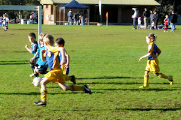
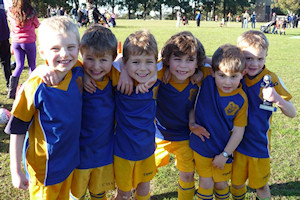
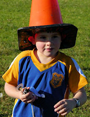
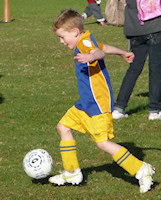
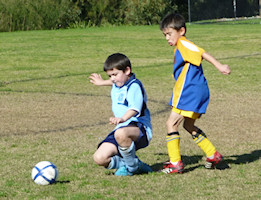

| Match Report - 25 June 2011 |
|
|
|
|
|
|
|
|
|
|

The first game of the season at Fontenoy park and the U6 Green were ready for
action.
The Ryde Panthers were determined to show the NRS team a thing or two about how
strong they were. The game was very physical. the first halve showed Jasmine,
Christian and Will scoring and team came off 3-1 in the lead.
The second half resulted in a further 2 goals to Jasmine and another to the
Panthers. All Players showed their skills in attacking and defending and the
player of week was awarded to Elijah for his commitment in defense and excellent
ball skills.
We wish Elijah and his family a wonderful and safe trip to Japan and we will
miss you over the next 4 weeks... Konnichiwa xox
- Sarah Robson
|
|
|
|
U6 Purple A
|
|


Today’s game was a tough match, against a pretty good little team.
The boys had to chase hard and defend a lot of attacking runs.

Liam found some space early on and had some good runs with the ball.
Luke did well to score an excellent opportune goal in the first.
Lachlan tried very hard today and had some good kicks.
Cameron did very well in one phase of play where he needed to defend against a
barrage of attacks right on our goal line, and kept them all out. Ethan chased
hard all game and was always up with the play.
Eli started the second half off with an injured finger, but he managed to collect
himself enough to get back out there, and played as hard as he could with a lot
of good runs and near misses. His efforts were finally rewarded with a goal, and
earned today’s well deserved "Player of the Match". The message today was, "Keep
trying and never give up!"
- Richard Wolken
|
|
|
|
U6 Red A
1 - 5
|
|
As we told our boys to take off their warm jumpers each parent saw around the
same time someone we feared- that blonde-haired goal-scoring machine from Ryde
Saints United. We did not alert our boys to his presence but somehow they knew,
and everyone's worst fears were realised from the first kickoff. Jake, one of
the heaviest hitters on our side, pounded the ball goal-wards and watched it
come back with equally alarming speed. Not even Hayden's impressive attacking
play and careful ball control could save our team from an amazing first goal
from the sideline.
The boys were faced with an openly hostile opposition. I quietly admired Toby's
and Josh's calm style of ignoring the pushing & grabbing by just gently moving
the ball up the field even if it meant kicking it out over the sideline-model
play.
With their spirits lifted from a few reassuring words from Coach Vera and Coach
Lenore they ran onto the field and started the second half with an impressive
war cry, shocking the opposition into momentary confusion. Their disorientation
vanished as fast as it it appeared as they continued their skillful attack
against the mighty North Ryde Red A .
Oliver scored the first goal and only goal for North Ryde and proved that
persistence eventually pays off from many near misses. Ben - the all rounder -
displayed great footwork with the reverse heel-kick turn around, and an amazing
save in he final minutes of the game.
It's great to see a group of boys who genuinely love being on the field... each
time they're off they count the seconds down until they're back on! What champions.
Player of the Week: Oliver Watson
- Paul Watson
|
|
|
|
U6 White C
|
|
On a beautiful sunny morning White C played White B and what a game. Three Ryan’s
and a lot of pre school friends between the two teams.
White B won with 3 goals and all the boys had a great game with lots of fun and
laughs.
- Lisa Mach
|
|
|
|
U7 Red A
5 - 3
|
|
Ripper of a day to play soccer, after a good worm up and comments form the super
coach Movies Moore the boys were fired up. Nick, Jack, Cooper & Josh leading the
way with many shots on goal with out finding the back of the net, the luck was
with the All Saints to start, with the first goal being kicked out of the pack
from the middle of the park and having the ball trickle into our goal leaving
the score board at 0-1 to the Saints.
A call coming from the Cosso boys Nan (Marcia) from the side line that we had
lost the luck, was all that was needed to turn that luck around, goals, goals,
goals started flowing. First goal came from a pass from Nick from the side line
with Cooper finding the open space and carried the ball straight to goal, great
set play a coach would be proud of.
Great skill up front from Cooper, good work in the middle from Daniel, Jack,
Hayden & Thomas giving the boys good field position, with strong defence at the
back from Josh and Nick. Blistering goal from Felix in the second, showing how
strong he has become on the field this year in-front of goal. Great ball carry
& dribbling from Jack up the middle with the ball finding the back of the net
to put the boys 3 goals up.
A few combination set plays found Nick & Cooper extending the goal count to 5,
a goal each.
Great play all round the field but the hard work and good ball control from
Cooper earning him man of the match.
Well done boys!
- David Anderson
|
|
|
|
U7 White C
10 - 4
|
|
This weeks game against Saints United was one of the most challenging for the boys
so far this season.
The first 10 minutes was a very even contest with both side sharing possession and
goals. The rest of the first half went much better for North Ryde with some great
teamwork and passing allowing us to pull out a bit of a lead by half time.
The second half was a continuation of the first half with some powerful kicking
and fantastic teamwork allowing North Ryde to run away with game for a comfortable
win.
Congratulations to all the boys on a great team performance and congratulations to
Yeong for a well deserved man of the match.
- Andrew Seymour
|
|
|
|
U8 Brown
4 - 0
|
|

Round 2 commences and the U8 Brown team are a force to be re-conned with!
This week everything started to come together, the team were passing well to
each other and finding free space. We had exhibited great tackling and ball
skills. The first goal was secured by Luca: an excellent display of strength
and determination in his shot from the 25 meter line. Next was a smashing goal
from Sam and Issac was unlucky with a brilliant shot that was deflected from
the top cross bar. Issac soon scored another goal and made some excellent runs
down the field.
Liam and Ben were very strong in defence. Oliver was positioning himself well
and was unlucky not to convert this week. Declan was consistent in both attack
and midfield. Jake was in the goals first half and Brooklyn made some great saves
in the second half. Luca secured the game with a final goal, again it was very
convincing goal from well out in the field.
A big thank you to David for coaching and umpiring and the player of the week
for his consistent, improved attacking skills and strength in the goals went
to Jake! Well done.
- Sarah Robson
|
|
|
|
U8 Yellow
1 - 5
|
|
Round eleven, game no 9. Having the previous match washed out, the North Ryde were
keen to get cracking with the game. This week saw Patrick and Kate as goal keeps
for the first and second half respectively. All up a very tough game, in which the
scoreline in no way reflects skill, sprit and determination of the team. Well done
North Ryde.
Final score West Pennant Hills Cherry Brook five (5) North Ryde one (1).
Goal Scorers:
1. Fletcher Gusse (1), 3 minutes into second half
Player of the Match - Damien Granet
- David Watt
|
|
|
|
U9 Division 3
0 - 0
|
|
The boys were up against Ryde Saints United this week. This was a team that they
previously beat 3-2 in a close match so we were likely to have another close one.
Both teams seemed pretty evenly match from the start with both sides managing a
couple of attempts but nothing that paid off. A few shots were wide and we had a
very close call against us which just went wide of Nyxyn in goals. The boys were
moving the ball very well and the defensive line was good, however we seemed to
be struggling to make any really strong attacking runs. The only exceptions were
a couple of counter attacks from half way.
The game remained scoreless at half time and a few position changes were made.
The second half didn't see many changes in the outcome though. It was still a
very close game with opportunities at both ends. Probably starting to favour the
opposition with a little too much ball in our half. But our defence held strong
and Nathan was string in goals again allowing us to keep the game to a scoreless
draw.
That now puts us a 5 draws for the season - which means that we are a hard team
to beat but we need to capitalise on some of our opportunities and put a few more
goals away. Troy earned the certificate for string defensive play and position
maintenance.
Hopefully a win next week will put us in contention for a top four finish.
- Darren Mason (Manager)
|
|
|
|
U11 Division 1
3 - 1
|
|
This was the one we had been waiting for. The return match against West Pennant
Hills who had beaten us by 3 goals to 1 in our first encounter several weeks ago.
Magdala Park was the scene of the battle, and the bright sunshine and dry turf
went some way to relieve the stress and tension of the occasion. West Pennant
Hills came flying out of the starter blocks from the word go and we found
ourselves on the back foot for the first few minutes of the match. The relevance
of the game was not lost on either side and both teams were stringing together
sequences of rather nervous and jittery game play in their efforts to maintain
possession of the ball.
WPH took the lead mid-way through the first half when a corner kick was converted
into a goal by a good interception and strike into the back of our nets to give
them the lead. The favour was returned shortly afterwards, however, when Charlie,
who was having a cracker of a game, nudged past a defender and struck the ball
from an acute angle past the keeper to bring the scores level, which is where it
remained until the half-way mark.
We started the second half with a positive attitude and were maintaining good
possession of the ball in defence and in the midfield, although it was clear that
the game could still easily go either way. An infringement in the penalty area,
however, presented an opportunity to tip the scales in our favour. Direct
penalties create a rather surreal atmosphere on the football ground. All the
players on the field come to a halt, as does all the cheering, jeering and
shouting on the sidelines. Time stands still, and the focus turns to the battle
of wits between the penalty kicker and the goal keeper. But cometh the hour...
David stepped up, cool as you like, and struck the ball hard and low into the
bottom-right corner of the nets to capture the lead and give his team a winning
edge.
WPH fought back hard though, and were perhaps unlucky not to score on two further
occasions as one ball struck the cross-bar but did not go in, and another skewed
harmlessly off the foot of a striker, right in front of our goals, with just the
keeper to beat. North Ryde were up to the task, however, as dogged in their
defence as they were determined in their attack. Lachlan launched a penalty kick
through the air from 35 metres out with his massive left boot, but was denied the
goal as the ball sailed wide of the right-hand post by the narrowest of margins.
The clincher came late in the second half, when one of those magic through balls
found Eli in a good position to pounce, which he did, twice, the first attempt
clattering into the keeper but the second finding the back of the nets on the
rebound to earn his team an unassailable victory.
Well played North Ryde!
- Mark Howard
|
|
|
|
U11 Division 3
0 - 4
|
|
The boys have been training really well, so this result was disappointing. In the
first half, North Ryde had a lot of ball, but was kept out by good defence and
solid goal-keeping. Massie made some particularly good runs. One of the Cherrybrook
team fell in the penalty box and the referee pointed to the spot, so the score was
1-0 at half-time.
In the second half, Cherrybrook kept putting through balls past our defence. Good
scrambling from Matt, Robert, Zac and the rest of the defenders stopped most of the
attacks, but eventually some of them were bound to get through. Cherrybrook scored
two good goals and then were awarded another penalty, right on full time. Ahmed
made some solid saves. We had a couple of chances to score, but couldn’t point the
ball into the net.
The game was a lot closer than the score suggests. It could easily have been a draw
with a couple of better choices at key moments and with a bit more luck. One
positive is that the team continues to play with enthusiasm so... on to next week!
- Martin Borri
|
|
|
|
U15 Division 2
3 - 1
|
|
For the ninth game of the year, with a clear day and an 11:00am start, the boys
played at Magdala Oval at North Ryde against Eastwood St Andrews FC, who are
currently second in the GHFA competition.
Cameron was away, Nat had injured his ankle and could not make it, Harry was
sick but still turned up the second half to cheer his team on... so we had a
squad of 12 players.
They where many highlights, which are below in chronological order:
- Tom’s kick from the LHS corner to Hayden, goal shot? just over the post
- Manav’s nice clear from the goal box
- Kyle’s excellent cross to the goal box
- Nice shot at goal from Daniel that rolled across the bar
- Mitch was putting in a good game but his lower back was giving him grief
- Tom’s bomb into the goal, their goalie had to jettison the ball as he was going to step backwards into the goal
- Manav’s good throw ins
- Chris’s great pass to Daniel up at the goal box
To this point of the game it looked pretty even with a 0-0 score possible for
the first half. A poor clearing kick, a bomb in the our own goal box, and Eastwood
was first to the ball and easily kicked it in. 0-1. Then:
- Kevin’s nice pass to Tom who shoots, just wide
- The Eastwood goalie steps out the goal box and gives us a free kick, Daniel takes the kick but goes high.
At half time, Paul encourages the boys, lets them know that we have plenty of
opportunities and to try to communicate:
- Tom from the LHS passes to Kevin, who passes to Daniel and scores. 1-1!
- Hayden makes a nice shoot at goal, just misses twice.
- Alex was strong in defence and placing the ball up front.
- Eastwood’s handball in their own goal box... Hayden takes the penalty. A very strong kick but too high.
- Ben fabulous corner right to Hayden, fabulous header straight into the net. 2-1!
- Luke made another strong sprint in shutting down the play, great speed.
- Tom, always entertaining us, running to the side lines and almost flipped over the fence!
- Another Daniel goal. 3-1!
- Tom another sprint down the LHS, using his speed to out accelerate the opposition.
- Lewis had a solid game as goal keeper and was constantly rallying the boys, well done boys!
Personally, that was the best half I have seen the boys play, they were passing,
looking for each other and even talking! It is very rewarding to see the boys
grow and go to the next level!
The player of the match was Manav... however there was no cup cake as the mothers
were away!
I would like to thank all the parents who came to support our team... you do make
a loud difference!
- Joe Rosenfels
|